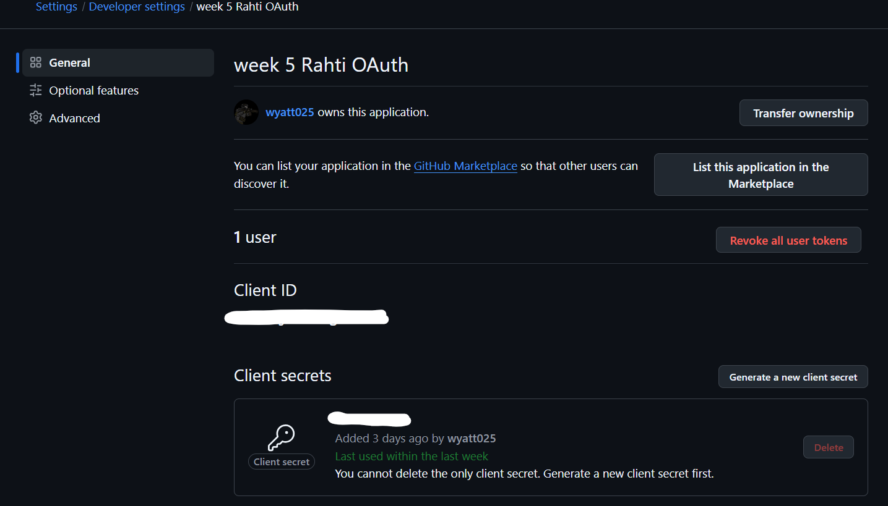
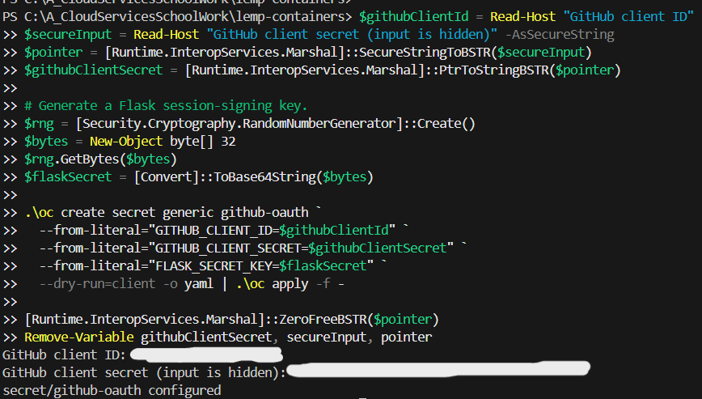

App description
This is a simple LEMP stack example, where the frontend is served by Nginx, the backend is powered by PHP-FPM, and the database is MySQL. The application demonstrates basic CRUD operations and showcases how to containerize a web application using Docker and deploy it on Kubernetes(Rahti).
Answer 1:
SAML is an authentication protocol (proving who a user is), while OAuth is an authorization framework (granting what a user or application is allowed to do). SAML acts like a passport that verifies your identity to get you into a building, whereas OAuth acts like a keycard or valet key that gives specific access to certain rooms or functions without revealing your identity.
A company will typically choose SAML when building or managing enterprise employee environments like using a Centralized Corporate SSO, which lets employees log into a central dashboard once and automatically gain access to all their enterprise SaaS applications. High-Security Enterprise Compliance is also a reason why SAML is heavily favored or used by IT security teams because it relies on strict XML signatures and certificates, providing robust governance over user identity. there may also be legacy systems that require SAML for compatibility.
A company would choose OAuth (often combined with OIDC / OpenID Connect for identity) when building modern web apps, mobile apps, or API-driven services. Mobile or single page appplications often use OAuth as it is much lighter and easier for mobile devices to parse. There may also be an need to allow a third-party application to access user data on behalf of the user without sharing the user's credentials directly. Like linking GitHub to Visual Studio Code. OAuth is the global standard for consumer-facing applications; social login is a common use case(like signing in with Google or Facebook).
Answer 2:
A Web Application Firewall (WAF) is a specialized security tool that monitors, filters, and blocks malicious HTTP/HTTPS traffic traveling to and from a web application. It primarily protects web apps at the application level. Attacks might be; SQL injection, cross-site scripting (XSS), cross-site request forgery (CSRF), denial of service (DoS), and other application-layer attacks in the OWASP Top Ten. (OWASP Top Ten is a standard awareness document for developers and web application security.) WAF would be placed in between the Rahti route and the frontend container: Internet traffic → Route → WAF → Frontend → Backend → DB.
Answer 3:
Centralized Object Storage—such as Amazon S3 or Allas (the CEPH-based research storage managed by CSC Finland)—relies on single entities operating massive data centers. Data is location-addressed. It is tied to specific buckets and physical server environments controlled by that single provider. On the other hand, Decentralized/Cooperative Networks—such as Sia or IPFS (InterPlanetary File System)—pool together unused storage from thousands of independent global nodes. Data is content-addressed using a unique cryptographic hash (Content Identifier or CID). The network splits, encrypts, and shards files across completely distinct, trustless peers
Trade-offs exist between centralized and decentralized storage. Centralized storage offers high performance, reliability, and ease of management but comes with single points of failure and potential privacy concerns. Decentralized storage enhances data redundancy, privacy, and censorship resistance, but may face challenges in performance, file availability, and complexity of management.
Answer 4:
YAML (YAML Ain't Markup Language) is a human-readable data serialization language commonly used for writing configuration files. It has become the default format for Kubernetes and Rahti because it strikes a perfect balance between machine readability and human usability for massive, complex cloud architectures. The YAML syntax is much easier to read and write as it only uses whitespace indentation to denote structure, rather than complex brackets or tags. It supports the use of comments as well as multi-document support(multiple YAML documents within a single file).
JSON is much more strict and is more directed towards machine readability rather than human usability. It requires proper use of brackets, commas, and quotes, and does not support comments or multi-document structures. YAML, on the other hand, is more human-friendly and flexible, making it easier to read and write for complex configurations compared to JSON.
Documentation
As I have set up the OAuth, I don't have a new pod or service specifically for authentication and documentation; it is integrated into the existing backend. Therefore I will provide screenshots of some of the set up. If the documentation feels vague, it is intentional for security reasons. Most changes happened in the backend code.

Enabled TLS for the frontend URL and applied it to the frontend service. (no screenshot here) Updated the backend code to integrate GitHub OAuth and handle authentication. Also updated the YAML files for configmap, backend deployment, and frontend route. Ran these commands to generate a flask secret key and create a secret github oauth:
Finally, built and pushed the changes to Docker. Then applied and rolled out the updates to Rahti.Reflection
This implementation uses GitHub OAuth for sign-in, while SAML is more common for enterprise SSO. OAuth provides delegated authorization; the backend retrieves the GitHub profile and uses it to establish the app session. In production, I would carefully protect and rotate the client secret and Flask signing key, require HTTPS, and limit the data stored in the session. GitHub availability and rate limits would also affect login reliability. This relates to my Part A discussion of OAuth versus SAML and application-layer security.